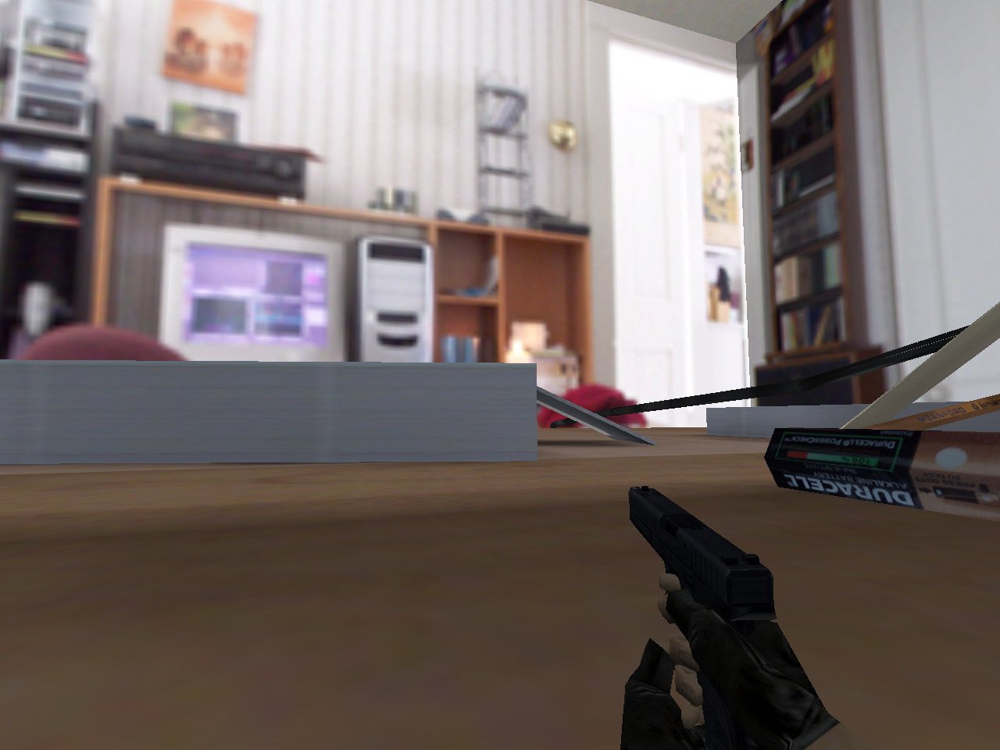
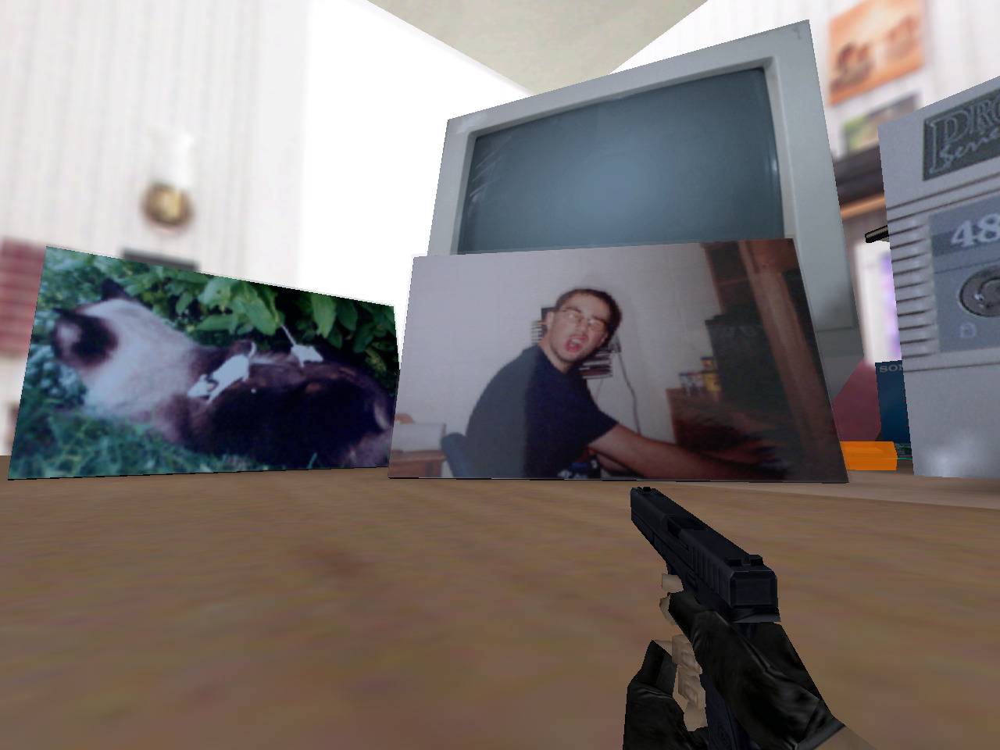
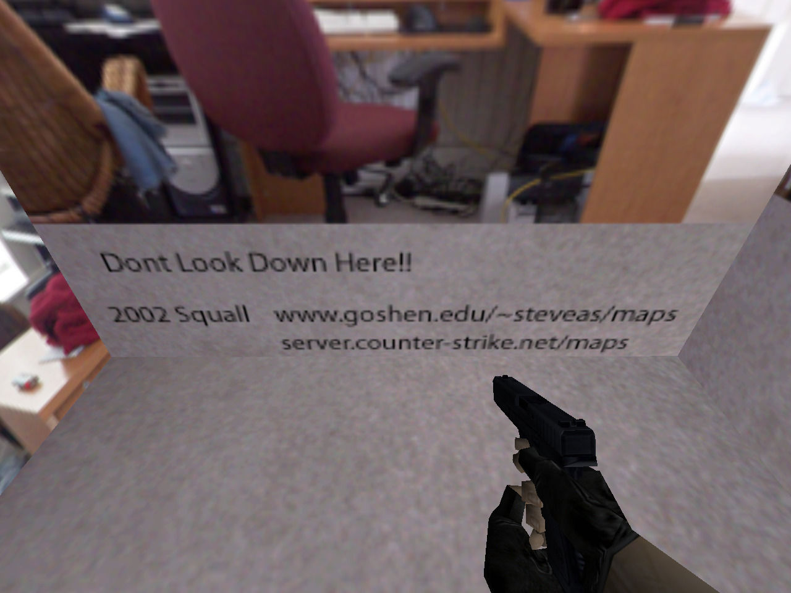

< de_desktop.bsp >
Steve “Squall” Schmidt
03/07/2002
de_desktop.txt:
——= De_Desktop by Squall =——
Objective: T’s Plant Bomb on the CPU or in the power supply.
3-7-02 Squall
steveas@goshen.eduhttp://www.goshen.edu/~steveas/maps
server.counter-strike.net/maps
Right after de_wallmart I had cleaned up the basement and found my 486 computer. I thought it’d be cool to run around inside a computer so I starting taking photos for textures. The next day de_desktop was done.